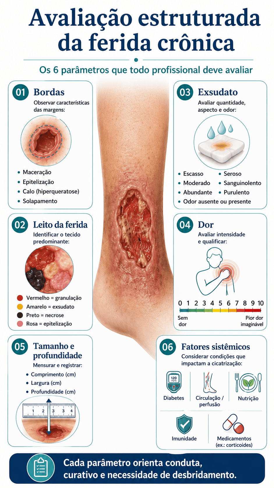
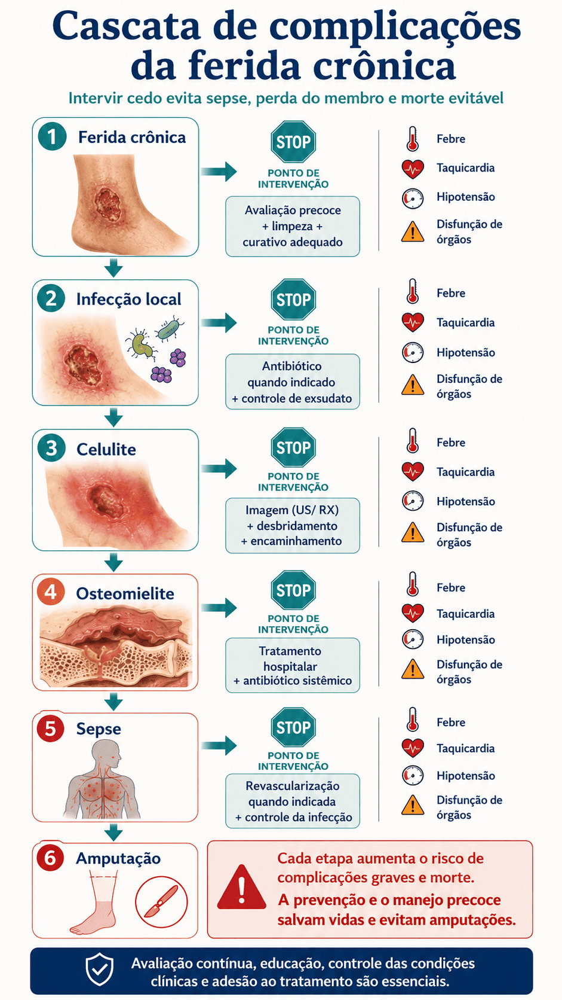

Pele · Cuidado de Feridas · Enfermagem Clínica · Revisão de Evidências IQWiG · Atualizado Out/2025
Por que algumas feridas se recusam a cicatrizar — e o que a medicina baseada em evidências pode fazer. Guia visual para estudantes de medicina e enfermagem.
Sobre a Fonte
Todo o conteúdo deste infográfico está ancorado nas avaliações do IQWiG — o Instituto Alemão para Qualidade e Eficiência em Saúde — e na plataforma InformedHealth.org. Entender quem produz esse conhecimento é fundamental para avaliar seu peso clínico.
O IQWiG (em português: Instituto para Qualidade e Eficiência nos Cuidados de Saúde) é uma instituição científica independente alemã, criada em 2004 e financiada pelas contribuições do seguro de saúde estatutário alemão. Suas responsabilidades legais incluem a avaliação de exames diagnósticos, medicamentos e tratamentos médicos com base em evidências científicas de alta qualidade — sem influência da indústria farmacêutica.
O InformedHealth.org é a versão em inglês do portal Gesundheitsinformation.de, a plataforma pública do IQWiG. Oferece informações de saúde gratuitas, sem anúncios, desenvolvidas segundo padrões internacionais de informação em saúde baseada em evidências. O conteúdo sobre feridas crônicas foi atualizado em 1.º de outubro de 2025, com próxima revisão prevista para 2028.
Equipe multidisciplinar (médicos, cientistas, jornalistas de saúde) produz os textos; revisores externos independentes verificam. O processo segue os padrões HONcode e DISCERN para informação em saúde.
Para feridas crônicas, o IQWiG publicou relatórios formais sobre terapia por pressão negativa (N17-01A e N17-01B, 2019) e oxigenoterapia hiperbárica para pé diabético (N15-02, 2016) — metodologia rigorosa de síntese de RCTs.
As avaliações do IQWiG são referência para políticas de reembolso na Alemanha e influenciam diretamente diretrizes europeias. Membros da rede INAHTA (Agências de HTA) e EUnetHTA.
Definição
Lesões cutâneas menores normalmente cicatrizam em dias a semanas. Quando uma ferida não avança em direção à cicatrização apesar do tratamento adequado, os clínicos a classificam como crônica — sinal de que uma condição subjacente está perturbando a cascata fisiológica de reparo.[1]
Uma ferida é clinicamente considerada crônica quando não apresenta cicatrização significativa em 4 a 12 semanas apesar de tratamento adequado.[1] Este é o limiar aceito internacionalmente, utilizado pelo IQWiG e pelas principais diretrizes de cuidado de feridas (DGfW, AWMF no. 091-001, 2023;[2] IWGDF 2023[3]).
Feridas crônicas se desenvolvem mais frequentemente nos pés e nas pernas inferiores — regiões especialmente vulneráveis à perfusão comprometida, hipertensão venosa e dano neuropático.[1] Compreender o porquê começa com o reconhecimento da tríade causal.
Uma ferida não é apenas um problema local. É uma janela para a patologia sistêmica — e tratar a ferida sem tratar sua causa é como remendar um cano furado sem fechar o registro.
— Princípio central do cuidado de feridas, IQWiG InformedHealth.org (2025) [1]Apresentação Clínica
Feridas crônicas liberam secreção persistente. A aparência — serosa, purulenta ou fibrinosa — sinaliza o estado inflamatório da ferida.[1]
A pele ao redor pode aparecer avermelhada (eritema) ou marrom-escura (depósito de hemossiderina, típico de úlceras venosas).[1]
Tecido e nervos danificados causam dor na maioria das feridas crônicas. Pacientes diabéticos podem não sentir dor alguma mesmo com feridas extensas — neuropatia periférica elimina o sinal de alerta.[1]
Feridas de cicatrização lenta frequentemente desenvolvem odor intenso — marcador de colonização bacteriana ou acúmulo de tecido necrótico.[1]
Prurido e dor tipicamente pioram à noite, causando privação significativa de sono — o que por sua vez compromete ainda mais os sistemas imunológico e de reparo.[1]
Vermelho = granulação; amarelo = esfacelo/infecção; preto = necrose/escara; branco/rosa = epitelização em andamento. Cada cor orienta a decisão clínica.[1]
Etiologia e Fatores de Risco
Três condições subjacentes são responsáveis pela grande maioria das feridas crônicas na prática clínica. Reconhecer qual delas impulsiona a cronicidade é essencial para selecionar a estratégia terapêutica correta.[1]
Veias das pernas que funcionam mal não retornam o sangue ao coração de forma eficiente, gerando hipertensão venosa. A hipóxia tecidual resultante impede a cicatrização e produz a clássica úlcera de perna venosa — o tipo mais comum de ferida crônica.[1] A compressão é a primeira linha terapêutica (Shi et al., Cochrane 2021[4]).
A hiperglicemia crônica danifica nervos periféricos (neuropatia) e pequenos vasos (angiopatia). O paciente perde a sensação protetora de dor, não percebe lesões e tem perfusão tissular comprometida — a tempestade perfeita para a úlcera do pé diabético.[1,3]
O estreitamento aterosclerótico das artérias reduz a entrega de oxigênio e nutrientes aos tecidos distais. Mesmo pequenas feridas não conseguem cicatrizar sem perfusão adequada. A revascularização cirúrgica é frequentemente necessária antes que a cicatrização possa progredir.[1]
Pressão prolongada sobre proeminências ósseas comprime a microvascularização, causando necrose isquêmica da pele sobrejacente. Produz úlceras por pressão (escaras) — preocupação central em pacientes acamados ou em cadeira de rodas.[1]
Condições como neoplasias, desnutrição, idade avançada ou terapia imunossupressora prejudicam a cascata de cicatrização. As feridas ficam mais suscetíveis a infecções e menos capazes de avançar pelas fases de reparo.[1]
Lesões traumáticas extensas ou queimaduras profundas podem ultrapassar a capacidade regenerativa do organismo. Quando a área de destruição tecidual excede o que o reparo endógeno pode cobrir, a intervenção cirúrgica (ex.: enxerto de pele) torna-se necessária.[1]
Classificação
| Tipo | Causa Principal | Localização Típica | Sinal Clínico Chave | Primeira Linha |
|---|---|---|---|---|
| Úlcera Venosa de Perna | Insuficiência venosa crônica / varizes | Maléolo medial / perna inferior | Bordas irregulares, pele com hemossiderina, distribuição "em polaina" | Terapia compressiva (meia/atadura)[4] |
| Úlcera do Pé Diabético | Neuropatia + angiopatia (DM) | Superfície plantar / pontos de pressão | Ferida indolor, calo perilesional, sinais de neuropatia periférica | Descarga de pressão + controle glicêmico + desbridamento[1,3] |
| Úlcera Arterial / Isquêmica | Doença Arterial Periférica (DAP) | Pé distal, artelhos, maléolo lateral | Bordas bem delimitadas, muito dolorosa; pulsos ausentes; ITB < 0,9 | Revascularização (cirúrgica ou endovascular)[1] |
| Úlcera por Pressão (Escara) | Pressão externa prolongada sobre proeminências ósseas | Sacro, calcanhares, trocânteres, isquion | Estadiamento I–IV; comum em pacientes imóveis/acamados | Redistribuição de pressão + reposicionamento + colchão especial[1] |
Avaliação Clínica
Medir comprimento, largura e profundidade (em cm). Documentar solapamento e tunelizações. Medições seriadas monitoram progressão ou deterioração.[1]
Avaliar contorno (regular vs. irregular), epitelização na margem, maceração, calo ou solapamento — cada aspecto indica uma fisiopatologia diferente.[1]
Classificar o tecido no leito: vermelho (granulação), amarelo (esfacelo), preto (necrose), rosa (reepitelização). Determina a necessidade de desbridamento.[1]
Avaliar volume (baixo/moderado/alto), consistência (seroso, serossanguinolento, purulento) e odor. Excesso de exsudato atrasa a cicatrização; infecção produz secreção purulenta.[1]
Usar escalas validadas (EVA, NRS). Notar gatilhos — repouso, movimento ou apenas na troca de curativo. Ausência de dor em ferida extensa sugere neuropatia.[1]
Revisar: diabetes (HbA1c), doença vascular (ITB/IPTB, pulsos), status imunológico, nutrição (albumina), medicamentos (corticoides, anticoagulantes) que comprometam a cicatrização.[5]

Manejo Baseado em Evidências
A remoção de tecido necrótico, desvitalizado ou infectado é a pedra angular do manejo de feridas crônicas. Sem desbridamento, a formação de biofilme e a perpetuação da inflamação impedem a progressão para cicatrização.[7]
Solução salina (NaCl 0,9%) é o fluido padrão para irrigação. Realizada a cada troca de curativo para remover debris superficiais. Água corrente pode ser aceitável para algumas feridas, mas as evidências sobre o agente ideal de limpeza permanecem limitadas.[9]
Evidência: LimitadaO ambiente úmido acelera a cicatrização. Tipos disponíveis: filmes, hidrogéis, hidrocoloides, alginatos, curativos de espuma e impregnados com prata. Trocados quando saturados, deslocados ou após vários dias. Fatores de crescimento (ex.: PRP) podem ser aplicados para estimular o reparo celular.[10]
Evidência: Moderada — sem superioridade clara de nenhum tipoPara úlceras venosas, meias ou ataduras de compressão são a pedra angular do tratamento. A pressão externa auxilia o retorno venoso, reduz a hipertensão venosa e melhora significativamente as taxas de cicatrização e o controle da dor. Contraindicada em DAP grave.[4]
Evidência: Forte (Cochrane 2021 [4])Um curativo hermético conectado a uma bomba de vácuo retira continuamente exsudato e cria pressão negativa sobre a superfície da ferida. Promove formação de tecido de granulação, reduz edema e aumenta a perfusão local. O IQWiG avaliou a TPNF tanto em cicatrização primária (N17-01B) quanto secundária (N17-01A): evidências sustentam melhores desfechos e menor tempo de internação.[11]
Evidência: Boa — IQWiG N17-01A/B (2019) [11]Quando a ferida é grande demais para fechamento espontâneo, enxertos autólogos de espessura parcial (retirados da coxa do próprio paciente) são transplantados. Substitutos biológicos de pele (produtos de células humanas + arcabouço sintético) são alternativa. Evidências sustentam cicatrização mais rápida em úlceras venosas e do pé diabético.[12,13]
Evidência: Boa — especialmente em UVP e UPDO paciente respira O₂ a 100% em câmara pressurizada (2–3 atm). Aumenta o O₂ dissolvido no plasma, promovendo angiogênese e atividade bactericida. O IQWiG (2016) encontrou evidências de que a OHB reduz o risco de amputação na síndrome do pé diabético.[14]
Evidência: Boa para SPD — IQWiG N15-02 (2016) [14]Utilizados quando infecção clínica é confirmada (eritema, calor, exsudato purulento, sinais sistêmicos). Não recomendados para uso rotineiro em feridas colonizadas mas não infectadas, pelo risco de resistência antimicrobiana. Administrados sistêmica ou topicamente conforme a gravidade.[1]
Evidência: Uso direcionado — sem uso profiláticoO ultrassom terapêutico aplica ondas sonoras para aquecer o tecido. A terapia eletromagnética usa almofadas com magnetos. Apesar do uso disseminado, nenhuma das duas demonstrou benefício clinicamente relevante em ensaios controlados de alta qualidade.[15,16]
Evidência: Insuficiente (Cochrane 2015–2017)A dor de feridas crônicas é subestimada e subtratada. O manejo eficaz inclui: curativos não aderentes para reduzir a dor na troca; analgésicos pré-procedimento (paracetamol, ibuprofeno ou opioides para casos graves); pré-embebimento em salina para soltar curativos aderidos; e programas multidisciplinares de manejo da dor. Suporte psicológico é igualmente benéfico quando a dor constante leva à depressão ou ansiedade grave.[1]
Prevenção
Manter HbA1c dentro da meta reduz danos vasculares e neuropáticos. Calçados adequados (largos, acolchoados), inspeção diária dos pés e acompanhamento podológico regular são obrigatórios. Mesmo lesões mínimas devem ser tratadas imediatamente.[3,17]
Pacientes com insuficiência venosa documentada ou varizes devem usar terapia compressiva de forma consistente. Isso normaliza a pressão venosa, previne o acúmulo de edema e reduz dramaticamente o risco de úlceras e sua recidiva.[4]
Para pacientes com DAP: cessação do tabagismo (intervenção isolada mais impactante), exercício aeróbico regular para desenvolver circulação colateral, terapia anti-hipertensiva e hipolipemiante, e revascularização quando indicada.[1]
Em pacientes imóveis: reposicionamento a cada 2 horas, colchões de redistribuição de pressão, proteção dos calcanhares, otimização nutricional (proteína, vitamina C, zinco) e protocolos estruturados de avaliação de pele (escalas de Braden ou Norton).[1]
Ingestão proteica adequada (1,2–1,5 g/kg/dia em pacientes de alto risco), vitaminas C e E (suporte antioxidante), suplementação de zinco e hidratação suportam diretamente as fases de cicatrização. Desnutrição é fator de risco independente para cronicidade.[1]
Treinar pacientes e cuidadores para identificar sinais precoces de deterioração — aumento do exsudato, eritema perilesional, odor, mudança na dor — e buscar atendimento imediatamente previne que feridas agudas se tornem crônicas.[1]
Complicações

Cuidado Integral
Pacientes frequentemente sentem vergonha e constrangimento pelo odor e aparência da ferida. O isolamento social é frequente. Clínicos devem rastrear ativamente a depressão e encaminhar para suporte psicológico.[1]
Banhos se tornam logisticamente difíceis. Terapeutas ocupacionais e enfermeiros domiciliares desempenham papel crítico na adaptação das rotinas diárias e no suporte para que os pacientes mantenham a higiene sem comprometer os cuidados com a ferida.[1]
Trocas frequentes de curativo, consultas clínicas e múltiplos cuidadores (enfermeiros de feridas, cirurgiões vasculares, endocrinologistas, podólogos) impõem demandas significativas de tempo e logística. O cuidado multidisciplinar coordenado reduz essa fragmentação.[1]
Bons resultados dependem de uma equipe de cuidados integrada: médico de família para coordenação, especialista em feridas para seleção de curativos, enfermeiro domiciliar para manejo diário e suporte familiar para resiliência emocional. A educação do paciente é inegociável.[1]
Síntese Clínica
Cronicidade é definida por tempo + falha em cicatrizar. Uma ferida sem progresso em 4–12 semanas apesar do tratamento é clinicamente crônica — investigar a causa subjacente.[1]
Sempre trate a causa, não apenas a ferida. Compressão para UVP, controle glicêmico para UPD, revascularização para DAP. Sem abordar a raiz, até o cuidado local perfeito fracassará.[1,6]
Sem dor ≠ sem problema. A neuropatia diabética elimina a dor de alerta. Uma ferida indolor em paciente diabético pode ser grande e profunda — inspeção e monitoramento regular dos pés são mandatórios.[1,3]
Desbridamento é fundamental. Biofilme e tecido necrótico perpetuam a inflamação e bloqueiam a cicatrização. O desbridamento — pelo método adequado — abre caminho para o reparo tecidual.[7]
TPNF e enxerto de pele têm forte evidência. Para feridas complexas que não respondem ao tratamento padrão, a terapia por pressão negativa e o enxerto são respaldados por evidências robustas, incluindo avaliações formais do IQWiG.[11]
Ultrassom e eletromagnetismo não são comprovados. Apesar do uso disseminado, nenhuma dessas modalidades demonstrou benefício clinicamente relevante em cicatrização de feridas crônicas em ensaios controlados.[15,16]
Manejo da dor é um objetivo terapêutico. Dor crônica de feridas causa privação de sono, depressão e cicatrização comprometida. Avaliação sistemática e manejo multimodal — incluindo suporte psicológico — são parte integral do cuidado.[1]
Sepse e amputação são evitáveis. Reconhecimento precoce da infecção, antibioticoterapia oportuna e encaminhamento cirúrgico em tempo hábil para feridas não responsivas evitam a cascata mortal que termina em perda do membro.[1,14]
Referências
Revisão do Conhecimento
10 questões baseadas nas evidências do IQWiG/InformedHealth. Feedback imediato com justificativa clínica após cada resposta.
Aprofundamento Socrático
Fonte primária: IQWiG / InformedHealth.org. Chronic wounds. Atualizado em 1.º out. 2025. informedhealth.org/chronic-wounds.html | informedhealth.org/what-are-the-treatment-options-for-chronic-wounds.html
Este infográfico é uma síntese educacional de informação em saúde baseada em evidências e não constitui conselho médico individual. As decisões clínicas devem sempre ser tomadas por profissionais de saúde qualificados no contexto individual de cada paciente.